SUP / palette, lighting & materials
Aurora visual comparison
Warm preserved, the initial dark Aurora baseline, and the refined intense Aurora. Same geometry and plant placements, with fixed animation time and matched camera views. The portrait preview uses 390 × 844 CSS pixels.
Default garden
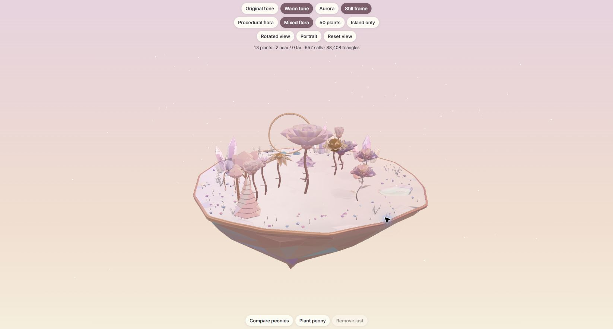
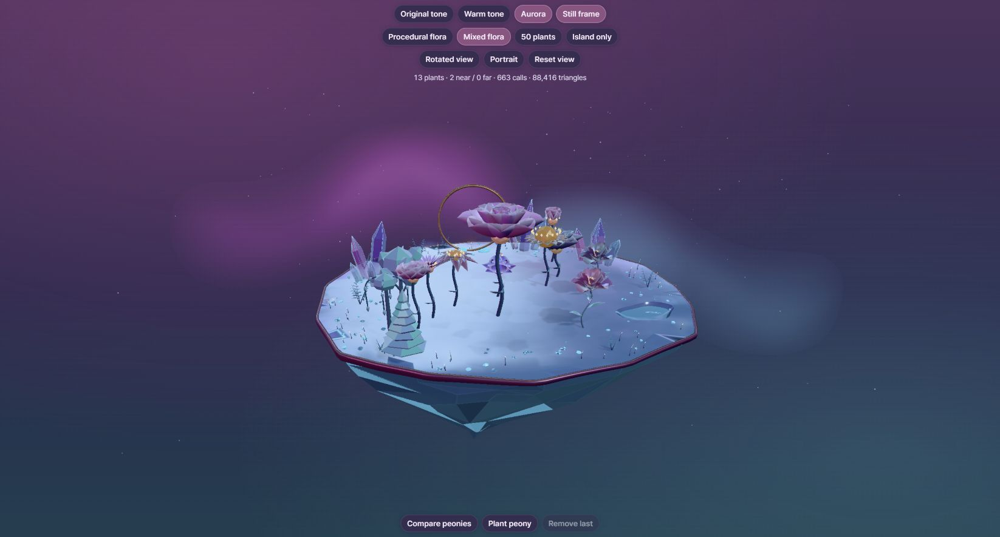
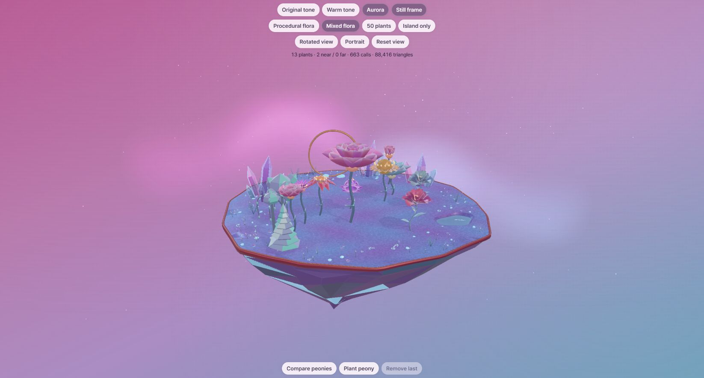
Rotated reflections
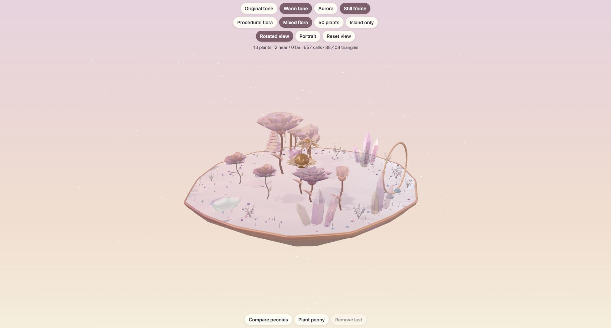
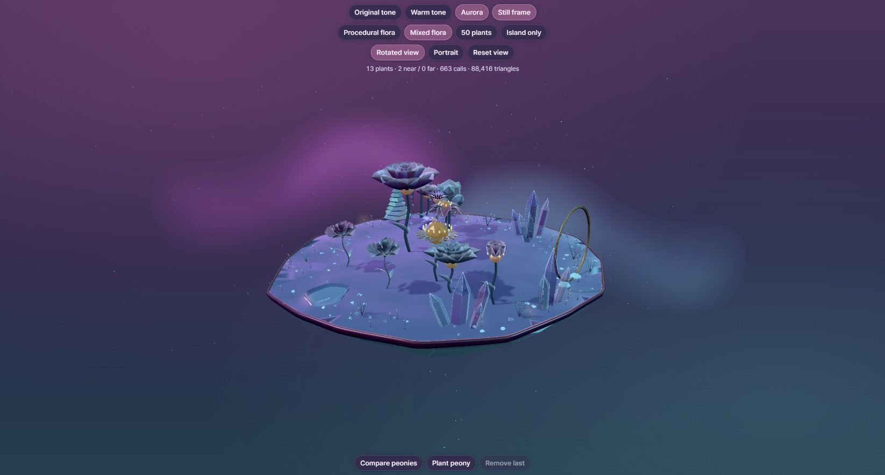
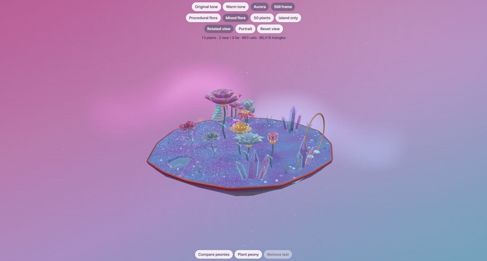
Island only
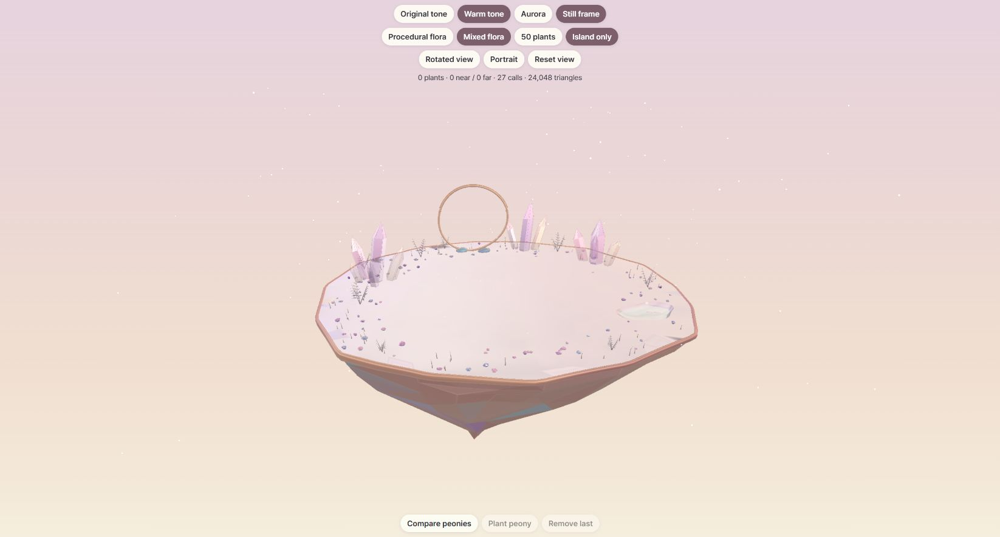
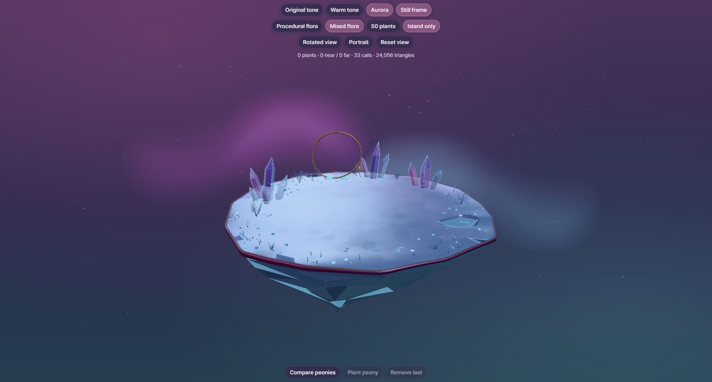
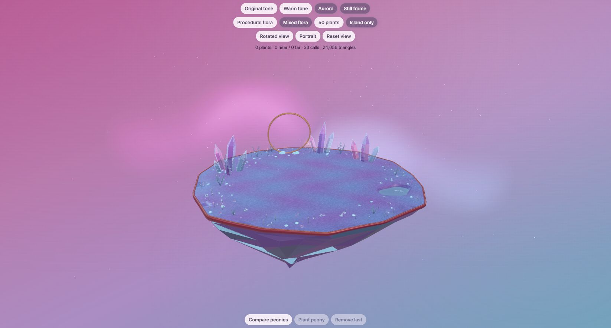
Compare peonies
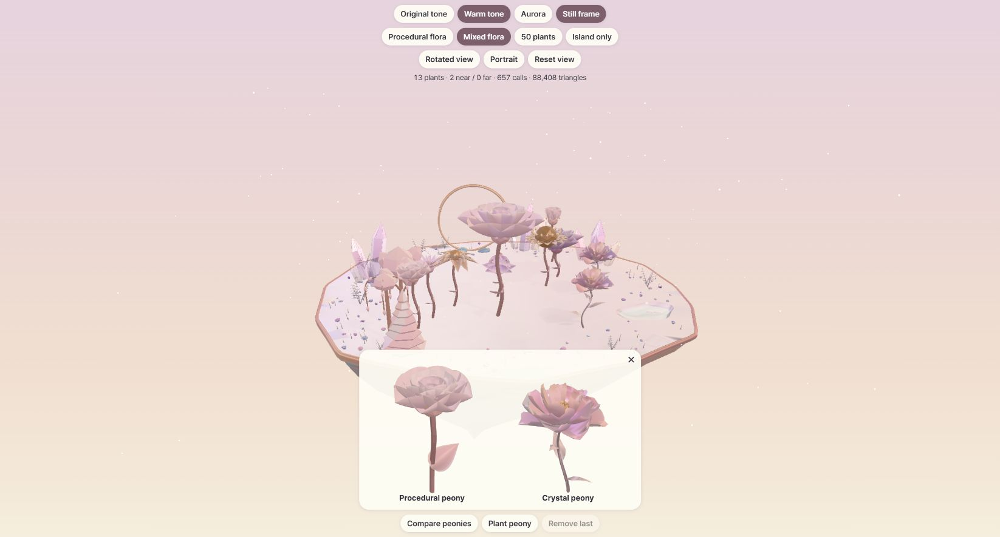
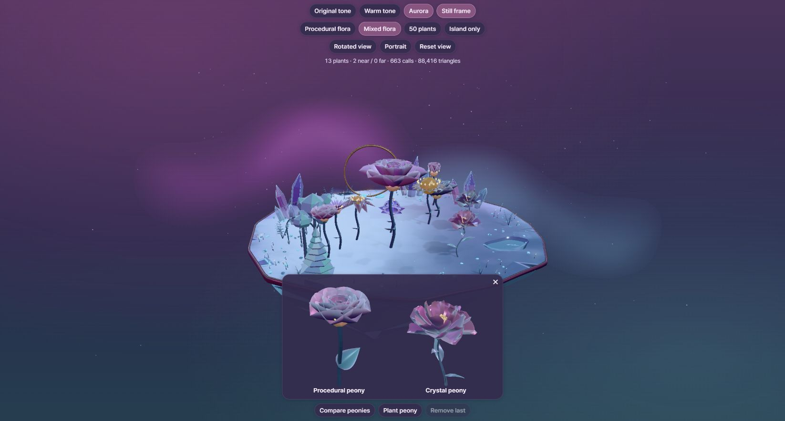
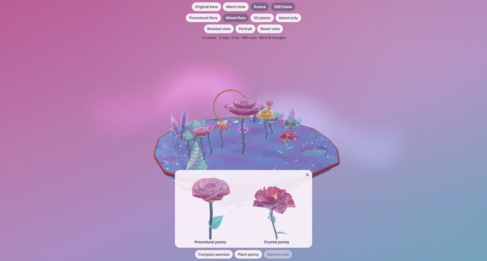
50 plants · portrait
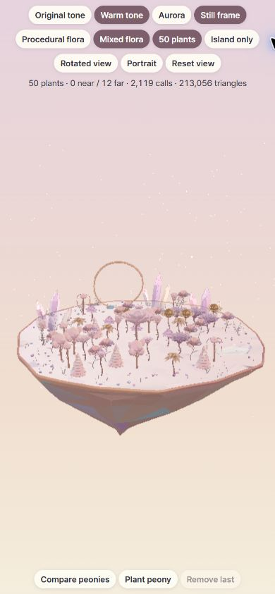
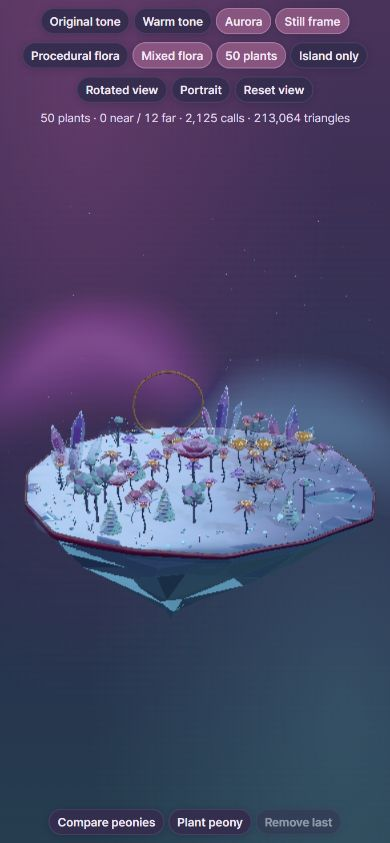
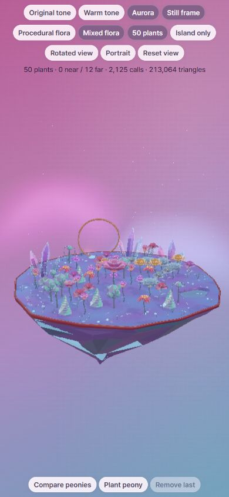